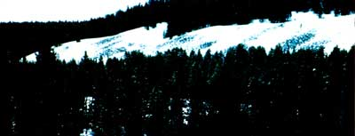

For many Americans, especially those of us from the West, the coyote is a symbol of the freedom and independence of all things wild. And for those fortunate enough to have heard it, the lonely, ethereal sound of the little canid's song sparks either a primal fear of the wild and unknown or the nostalgic, almost instinctive comfort of knowing that we're hearing a music that entertained and enthralled Homo long before he was sapiens.
And for most of us, that's about as far as our knowledge of, experience with, or concern for the coyote extends. But for some-a relative handful of western ranchers, most of them sheepmen-the "prairie wolf" has become the center of special attention these last few years. These modern-day sheep- and cowboys charge the coyote with the crime of killing newborn calves and lambs. Especially lambs. In fact, so much stock is lost to predators, some sheepmen claim, that the coyote is literally eating them out of business.
Meanwhile, a growing number of wildlife conservation groups and concerned individuals counter that the situation isn't nearly as bad or as simplistic as the wool growers would have us believe. They say that the ranchers aren't playing fair and never have, that they are exaggerating their predation losses, that the coyote is being used as a scapegoat to cover up the ranchers' managerial shortcomings, and that some of the substances and methods used in the war against predators are inhumane and dangerous-and shouldn't be allowed on our public lands (where the ranchers in question graze their stock). Furthermore, say the conservationists, the real question isn't whether the ranchers can survive the predations of the coyote, but whether our western public domain can survive many more years of abuse by the stockmen and bureaucrats who hold its fate in their hands.
The western rancher's war on predators extends back to the frontier days when he was slugging it out with buffalo, wolves, Indians, and squatters for control of the vast rangelands. But the rancher long ago extirpated those other competitors ... leaving only the durable coyote to challenge his sovereignty.
Today, even as you read this, the wool growers and conservationists have taken their differences to the federal courts. Meanwhile, Mr. Coyote concentrates his efforts on the actual battlefront, where he daily dodges bullets, traps, and poisoned baits in his determination to see to the tasks that nature designed and intended him for: killing, eating, and reproducing.
And so far, the amazingly resilient and adaptable canid seems to be holding his own. Even prospering. In fact, a recent survey by the U.S. Fish and Wildlife Service (FWS) revealed resident coyote populations in all of the 48 contiguous states except Rhode Island! Even so, Canis latrans (the "barking dog") is primarily a western fixture, thriving on and in the prairies, deserts, and mountains of that semiarid country. But-as the FWS survey confirms-he'll set up housekeeping virtually anywhere when necessity and survival demand (sometimes being pushed to the very shoreline of civilization, where he's obliged to subsist on an "international" diet of American alley cats, Norway rats, and errant French poodles).
'But for all his varied range, Mr. C grows largest and most beautiful in the northern Rocky Mountains, where his diet is both ample and diverse and includes-well, just about everything. Mice, voles, rabbits, squirrels, chipmunks, and other small creatures are his favored foods ... though he also loves carrion and will sample various vegetarian dishes on occasion. And when times are truly hard, game is scarce, and hunting conditions are favorable (lots of deep, soft snow), he'll make a go at bringing down a young, old, sick, or otherwise easy-to-catch deer, antelope, or even elk. Which is entirely in keeping with the spirit of the old Eskimo maxim-as reported by Canadian naturalist Farley Mowat-that says "It is the wolf who keeps the caribou strong." (Even so, more big game is killed each winter by feral and free-running domestic dogs than by all other predators combined!) Still, when western wool growers insist on crowding all those sheep onto the public rangelands and forests, thereby decreasing the abundance of natural game ... and when those same sheep are often left unattended for weeks and months at a stretch, even at lambing time ...
It's that taste for the meat of ungulates, of course, that has gotten the coyote into so much hot water with sheepmen and, to some extent, with hard-luck hunters. (Maybe you've seen the bumper sticker that rationalizes, "Did the coyotes get your deer this year?")
Nevertheless, the little canid carries on and, if given the opportunity, will live to the age of 12 or so in the wild. Though these days, what with times being so rough and all, a coy ote is lucky to enjoy even a couple of harassed and hungry years before being shot, caught, poisoned, or deprived of his livelihood through habitat reduction.(which is the ulti mate threat to all wildlife and, in the majori ty of cases, the real villain that "got your deer"). Many coyotes, in fact, are blown up or roasted alive as unweaned pups in their subterranean nurseries-a controversial pre dator control practice known as "denning."
But enough coyote talk for now. Time to visit with the sheepmen.
MEANWHILE, BACK AT THE RANCH . . .
I use the catchall term "ranchers" in what follows only because it's unavoidable. But my observations concern only a relatively small group of some 36,000 stockmen (and there are many notable exceptions among their number) who run animals on the Bureau of Land Management (BLM.) and national forest lands of the American West ... receive substantial subsidies from the federal govern ment to do so (in 1982, federal expenditures on behalf of public-land-using stockmen exceeded income from the grazing fees paid for the millions of animals involved to the tune of almost $14 a head) ... and yet squeal for even more federal help when a coyote nips one of their often neglected animals.
I speak of those who lease grazing privileges from the government at something like 16% of what they'd have to fork out to rent private pasture, of those who enjoy government strung fence and government-graded roads and government-dug stock tanks and wells. I speak especially of those who, even at the bargain basement rates they're paying, feel pressed to sneak more animals than they pay for onto the public domain.
With the help of politically hog-tied and/or kowtowing BLM and Forest Service bureaucrats, this handful of stockmen are overgrazing western America to the detriment of its scant water supply and critical riparian zones, and to the detriment of our vestigial populations of native western wildlife (wildlife that is supposedly guaranteed "equal time" by the impotent Classification and Multiple Use Act and its more recent echo, the Federal Lands Policy and Management Act of 1976).
And what do we, the taxpayers who subsidize the government that subsidizes the cost ineffective western livestock business, get out of it? Why, we get polluted water and soil erosion, along with fences, sheep, cows, horses, and goats on our public domain. (But then, we must remember that it's not entirely the ranchers' fault. After all, they may run too much inventory on the public land and wring the very lifeblood from it for a few more almighty dollars ... but it's the federal agencies charged with the stewardship of that same land that allow them to.)
Be all that as it may, an increasing portion of the American public from all parts of the country (including native westerners) are coming to feel that the ranchers who are guilty of the above-mentioned moral indignities (and again, we are concerned here only with those few) have no right to moan when a coyote, an eagle, a bear, or a mountain lion gobbles up a bit of their walking merchandise. Since they're using land that also according to federal and moral law-belongs to the American people and to the wildlife that has always been there, they necessarily must accept predation losses as a normal risk cost of doing business.
"Cactus Ed" Abbey expressed his characteristically outspoken and on-target views on the coyote/sheep man conflict way back in the mid-60's in his wilderness tome Desert Solitaire:
The sheepmen complain, it is true, that the coyotes eat some of their lambs ... but do they eat enough? I mean, enough lambs to keep the coyotes sleek, healthy and well fed? . . ' the sheepmen who run their hooved locusts on the public land and are heavily subsidized, most of them as hogrich as they are pigheaded, can easily afford these trifling losses.
Now onward to an examination of ...
THE POLEMICS OF THE DEFENDERS
The Washington, DC-based organization Defenders of Wildlife and 13 like-minded environmentalist groups now allied to fight the Pacific Legal Foundation (the folks from the sheep camp) in the court and media battles centering around the coyote are not, from all appearances, a bunch of "bleeding heart" animal-lovers trying to save the maligned prairie wolf from the ranchers and government trappers (known euphemistically as Animal Damage Control agents). The coyote is holding his own in that fight so far) and they know it. Rather, they are concerned with [1] the credence given to the wool growers' hue and cry for even more federal help in the form of predator control, [2] the danger to humans and nontarget wildlife species arising from some of the predacidal substances that have been used in the past and are being recommended for use again by the Reagan administration, and [3] the nature of the seemingly unholy alliance between the administration and the western stockmen's organizations.
In short, the conservationists see themselves as fighting a battle to protect America from her own self-consuming greed. And their precise concern just now is a predacidal toxin with the clinical name of sodium monofluoroacetate, better known as Compound 1080.
As compounds go, 1080 is a dandy: no taste, no odor, looks like powdered sugar, attacks the cardiovascular and central nervous systems simultaneously, induces convulsions and perfect agony, and is responsible for the tortured deaths of countless thousands of predators, untold numbers of non target wildlife, and a couple of dozen humans. There's no treatment and no known antidote for Compound 1080.
For years, sodium monofluoroacetatedoped "carcass baits" (most frequently, horses that were led to the baiting sites and shot) were strewn about both public and private rangelands and forests. Then, in 1972, its use on federal lands was halted by a Nixon executive order, with the Environmental Protection Agency (EPA)-then, as now, directed by William D. Ruckelshaus-follow ing suit by banning the poison for all uses, anywhere, save for limited application as a rodenticide.
Shortly after coming into office, President Reagan rescinded the executive order that had banned 1080 on public lands, thereby sending a clear political directive to his flock of appointees at Interior and EPA (at that time, Watt, Burford, Gorsuch, et al) to emasculate their respective agencies' Compound 1080 prohibitions. Which they did. As quickly as they could make it happen.
In October of 1982, EPA Administrative Law Judge Spencer T. Nissen ruled in favor of lifting the ten-year ban on 1080 (while Director Ruckelshaus stood aside, taking the part of a politically fearful Pontius Pilate). Then, almost exactly one year later, Lee Thomas, another EPA judge (with the bizarre title of Assistant Administrator for Solid Waste and Emergency Response) issued a final decision in the 1080 case, which essentially affirmed judge Nissen's earlier call to 'Ireregister" (EPA talk for lifting the ban) the poison for use in "single lethal dose baits" and "toxic collars" to be worn by sheep.
According to FWS, the proposed toxic collars would contain a quantity of sodium monofluoroacetate calculated to kill a coyote when the predator went for the throat of a sacrificial lamb. And the single lethal dose baits would employ 1080 in small balls of tallow (or another attractant) designed to be swallowed whole by the first scavenger that came along, thereby proving lethal to only one animal per bait pellet.
But neither the sheepmen nor the conservationists are pleased with the EPA's attempted compromise, and both sides have filed notice of appeal. The wool growers say they need the old pre-1972 "no holds barred" 1080 liberties in order to effectively combat the growing coyote predation problem. The conservationists say that coyotes are not the primary cause of the ranchers' problems, and that much of the blame has to fall on the stockmen themselves. Furthermore, say the conservationists, any amount of a poison as dangerous and indiscriminate as Compound 1080-used in any fashion-is too much.
But enough introduction and overview. At this point, let's turn the lectern over to representatives of the two opposing teams on the 1080 playing field. The following paraphrased statements were gathered through a series of lengthy conversations with representatives from EPA, FWS (and their subagency, Animal Damage Control), Defenders of Wildlife, sheepmen, a professional trapper, and a variety of published sources including the EPA's "Technical Review Documents on Compound 1080."
ACCORDING TO THE FWS (ET AL) ...
* Over the past few years, reported incidents of coyote predation have steadily increased. Latrans is ranging more and more easterly, and now stock raisers even in some New England states are reporting problems.
* If used properly, Compound 1080 is a "very species-specific" toxicant, and nontarget wildlife deaths from the poison are "very rare." Eagles (a species that the conservationists feel is especially endangered by 1080) are highly resistant to the poison, as proved by research. (In that research, a bait was laced with the "standard dose" of.8 grains of 1080 per 100 pounds of meat and fed to coyotes and eagles. FWS reports that it took only 2.5 ounces of the bait to kill a coyote, while over a pound was required to prove lethal to an eagle.)
* To test the charge that 1080 produces secondary poisoning (one animal dying after eating the flesh of another that was killed by a toxin)' FWS drafted a flock of magpies, which, they say, are the most sensitive of all birds to the compound. After killing a coyote by administering five times the normal lethal dose of 1080, the researchers enclosed the birds with the dead predator and forced them to eat its flesh or starve. Reportedly, none of the magpies died from eating the coyote (though a few did starve rather than give it a try).
* The fear that 1080 will be removed from sheep collars and used in carcass baits is unfounded, since the collars will cost ranchers at least $16 each, and the contents of six collars would be required to do the job. Besides, why would anyone turn to such an expensive source of poison when it's available, at a much lower cost, through an active Mexican- and Canadian-supplied black market?
* Ranchers have a right to demand federal predator control assistance, since they contribute a share of such programs' funding through cooperative agreement with the federal government and their respective states and stockmen's associations.
. . . AND CONSERVATIONISTS REPLY . . .
*The FWS's own statistics on the increase in the coyote population prove that the lethal methods of predator control used by that agency over the past several decades have served only to magnify the problem. (Coyotes have the ability to increase the size of their litters dramatically when their numbers are threatened.)
* FWS's claims that 1080 is not a threat to nontarget wildlife are invalid, because that agency has never run a monitoring program that was adequate to make that determination. Indeed, in one striking case that throws considerable doubt on the FWS statements, one of that agency's predator control officers, working on his own time, spiked one of his 1080 bait stations with the tracer chemicals zinc and cadmium sulfide. Later, he collected the corpses of animals found in the vicinity of the bait and took them home, where he performed necropsies in order to determine the presence or absence of the 1080 tracer. Of the 82 animals that he examined, 37 contained the tracer. The results broke down like this: 4 coyotes, I dog, 8 badgers, 2 bobcats, 2 pine martins, 1 mink, 1 weasel, 6 golden eagles, 1 redtailed hawk, 4 magpies, 2 prairie falcons, 1 sharp-tailed hawk, 1 Canada jay, 1 rough-legged hawk, and 2 hawks of indeterminable species. The predator control agent subsequently resigned from FWS and hied to the camp of the conservationists.
* All FWS claims as to the practicality and effectiveness of 1080 are based on an ideal scenario: their "when used properly" line. In reality, that situation is rarely achieved.
* The "small amount" of 1080 contained in a single sheep collar (300 to 600 mg in a solution of 30 to 60 cc) is sufficient to kill six to twelve 150-pound humans, 30 or more children, or countless wild and domestic animals.
* Sheepmen do contribute to predator control funds, but the federal government puts up a minimum of $3 for every $1 kicked in by the ranchers and their states combined. That's too much, and as Dr. Denzel Ferguson (a rangelands expert) puts it, FWS is "using public funds to kill publicly owned animals on public lands for the economic gain of private stockmen."
* Habitat reduction and overgrazing-not predators-are the significant killers of wildlife. Steve Gallizioli, Research Chief for the Arizona Fish and Game Department, has said that "the grazing of domestic livestock on western rangelands has probably had a greater adverse impact on wildlife populations than any other single factor."
* Obviously, say the conservationists, the real question is not how to keep the coyotes from eating sheep, but how to keep livestock from eating the American West!
ALL IN ALL
The predator/poison/rancher/conservationist controversy is complex and confusing. Neither the ranchers/bureaucrats nor the conservationists have been totally guiltless of hyperbole and emotionalism (although it's clear to me that one side does appear considerably less objective than the other). But the one undeniably good thing to come of it all-and specifically from the present court and media battles over EPA's attempts to re-register Compound 1080-is more research ... from both sides. And I hope that, along with studying predators and poisons, someone with a sense of justice and a position of authority, somewhere, will do some serious digging into the Wild West politicking and bureaucratic castle-building that have allowed our public lands to be abused and degraded to the shameful condition they're in today.
But still, can't something be done for those stock raisers who do have an honest coyote problem ... homesteaders, small-time cattle and sheep ranchers who graze on their own pasture, and even the few honorable publicland lessees who shun federal assistance and toxicants?
Yes, something can be done. They can help themselves. Many already are. Several nonlethal predator control methods have been tested and proved effective, including electric "coyote fences" as used successfully in New Zealand, taste-aversion substances that offend rather than kill, guard dogs (the Great Pyrenees is hell on coyotes and feral dogs but a veritable lamb with children and domestic livestock), "shed birthing" (Mr. Coyote can't get your lambs if they're born in a barn!), and probably the most effective anti-predator method of all-proper shepherding. (When the wool and mutton markets took a tumble a few years back, one of the first expenses many sheepmen cut was the number of "field representatives" they employed.)
Let the ranchers give some of those alternatives a fair shake, at their own expense, and see if things don't improve. That's the way of honest, free enterprise. That's the way John Wayne and the Marlboro Man would do it.
Meanwhile, the coyote continues to operate quite in tune with nature and his given purpose on Earth ... as opposed to our constant meddling and attempts to dominate and control everything, including each other.
Perhaps, in the big picture, the coyote is smarter than we are.
READING
For those who'd like to learn more about various aspects of this conflict, I heartily recommend the following sources:
The Coyote: Defiant Songdog of the West by Francois Leydet (1979, University of Oklahoma Press, $7.95 in paperback, 224 pages, available through any good bookstore) is a thorough and entertaining investigation of Canis latrans and all the hubbub that surrounds him today.
Sacred Cows at the Public Trough by Denzel and Nancy Ferguson (1983, Maverick Publications, P.O. Drawer 5007, Bend, OR 97708, $8.95 in paperback, 250 pages) is an eye-opener concerning the antics of western ranchers and the federal bureaucracies that oversee our public domain. (It was also the source for a portion of the statistical information appearing in this article.) The book represents ten years of frontline research, and Dr. Ferguson's authority is virtually unimpeachable. (Sacred Cows is hot off the press, and if your local bookstore doesn't yet have it, Maverick Publications has offered to send MOTHER's readers a copy, postpaid, for the cover price.)
Defenders of Wildlife, Predator Project, 1244 19th St. N.W., Washington, DC 20036, can provide you with up-to-date status reports on the Compound 1080 controversy and/or membership information. Or if you already know your mind and want to do something to help, send Defenders $20 for a year's membership (which includes the excellent bimonthly magazine Defenders).
WRITING
If you'd like to help persuade Congress to emphasize research into and use of nonlethal means of predator control, express your views in writing to Representative Sidney R. Yates, Chairman, House Subcommittee on Interior Appropriations, Washington, DC 20515. (Defenders of Wildlife describes Yates as "generally a friend of alternatives" to lethal predator control.)
Yates's counterpart in the Senate (who is, apparently, not quite so "Friendly "to alternatives) is also worth sending a letter to: Senator James A. McClure, Chairman, Senate Subcommittee on Interior Appropriations, Washington, DC 20510.
And - why not? - if you want to aim your views concerning the public-domain livestock industry and its representative federal bureaucracies at the very head of the beast, write to Secretary of Interior William Clark, Washington, DC 20240. (That zip will direct your missives tight to his office, and no further address, is necessary.)
DOING
If you are a stock raiser experiencing predation problems (or if you know someone who is), drop a note requesting guard dog information to The Farm Center, Hampshire College, Amherst, MA 01002. Defenders of Wildlife reports that "Dr. Ray Coppinger at the center has projects in several parts of the country. He raises, trains, and places dogs to guard livestock. He's very good and quite cooperative."
|
 As he populate more and more of the earth. man will have to eliminate all forms of wildlife that would compete with him for space and for food . . . he will tolerate wild animals. wild plants. and wild landscapes only to the extent that they serve his needs: ? Rene Dubos |
|
|